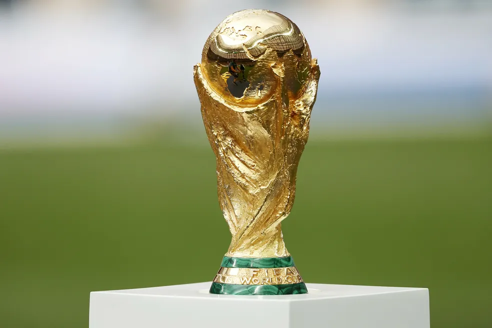
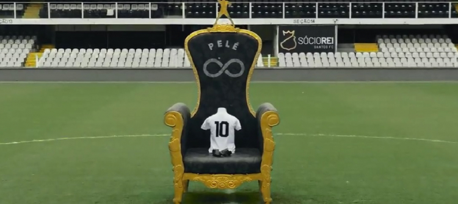

O filme conta a trajetoria da carreira do Pelé principalmente na seleção brasileira, e nas conquistas de 58, 62 e 70 conta a participação do Pelé nas copas do mundo e como ele se tornou um dos maiores jogadores de futebol do mundo. O filme é uma biografia do jogador e retrata a sua vida desde o seu inicio até o auge da sua carreira. inclusive com imagens da epoca
Isto é Pelé® é um documentário brasileiro lançado em 1974, que presta um tributo cinematográfico à carreira de um dos maiores ídolos do futebol mundial: Edson Arantes do Nascimento, o eterno rei Pelé. Dirigido por Luiz Carlos Barreto e Carlos Hugo Christensen, o filme mistura imagens de arquivo com narração, entrevistas e uma linha do tempo que acompanha os momentos mais emblemáticos do craque.
O documentário cobre desde os primeiros passos de Pelé em Bauru, passando por sua ascensão meteórica no Santos Futebol Clube, até seu protagonismo absoluto na Seleção Brasileira, especialmente nas conquistas das Copas do Mundo de 1958, 1962 e 1970. As cenas de jogos históricos, gols memoráveis e a reverência da imprensa internacional ajudam a consolidar o mito em torno da figura do Rei.
A produção tem um tom quase reverencial, apresentando Pelé como um herói nacional e um símbolo da genialidade brasileira. Isso, ao mesmo tempo em que engrandece o legado do jogador, pode soar exagerado em alguns momentos, já que o filme evita polêmicas ou críticas, focando exclusivamente em sua trajetória gloriosa.
Mesmo assim, para os fãs de futebol ou para quem quer entender melhor por que Pelé é uma figura tão importante para o Brasil e para o esporte mundial, Isto é Pelé é uma obra essencial. É mais do que um documentário esportivo — é um registro histórico de um ídolo que transcendeu gerações e fronteiras.
| Categoria | Competição | Títulos | Anos |
|---|---|---|---|
| Seleção Brasileira | Copa do Mundo FIFA | 3 vezes | 1958, 1962, 1970 |
| Copa Roca (Brasil x Argentina) | 2 vezes | 1957, 1963 | |
| Taça Oswaldo Cruz | 5 vezes | 1958, 1961, 1962, 1968, 1976 | |
| Taça Bernardo O'Higgins | 3 vezes | 1959, 1961, 1966 | |
| Santos FC | Copa Libertadores | 2 vezes | 1962, 1963 |
| Mundial Interclubes | 2 vezes | 1962, 1963 | |
| Campeonato Brasileiro (Taça Brasil / Robertão) | 6 vezes | 1961, 1962, 1963, 1964, 1965, 1968 | |
| Campeonato Paulista | 10 vezes | 1958-1960, 1961-1962, 1964-1965, 1967-1969 | |
| Taça Brasil | 5 vezes | 1961, 1962, 1963, 1964, 1965 | |
| Recopa Sul-Americana | 1 vez | 1968 | |
| New York Cosmos | NASL (Liga Americana) | 1 vez | 1977 |
| Conquistas Individuais | Bola de Ouro Honorária (FIFA) | 1 vez | 2014 |
| Maior artilheiro da história do Santos | 1.091 gols | ||
| Maior artilheiro da Seleção Brasileira (não oficial) | 77 gols |
Apesar de não ser retratado no filme pois não havia acontecido irei destinar está parte final como homenagem ao eterno Rei Pelé
